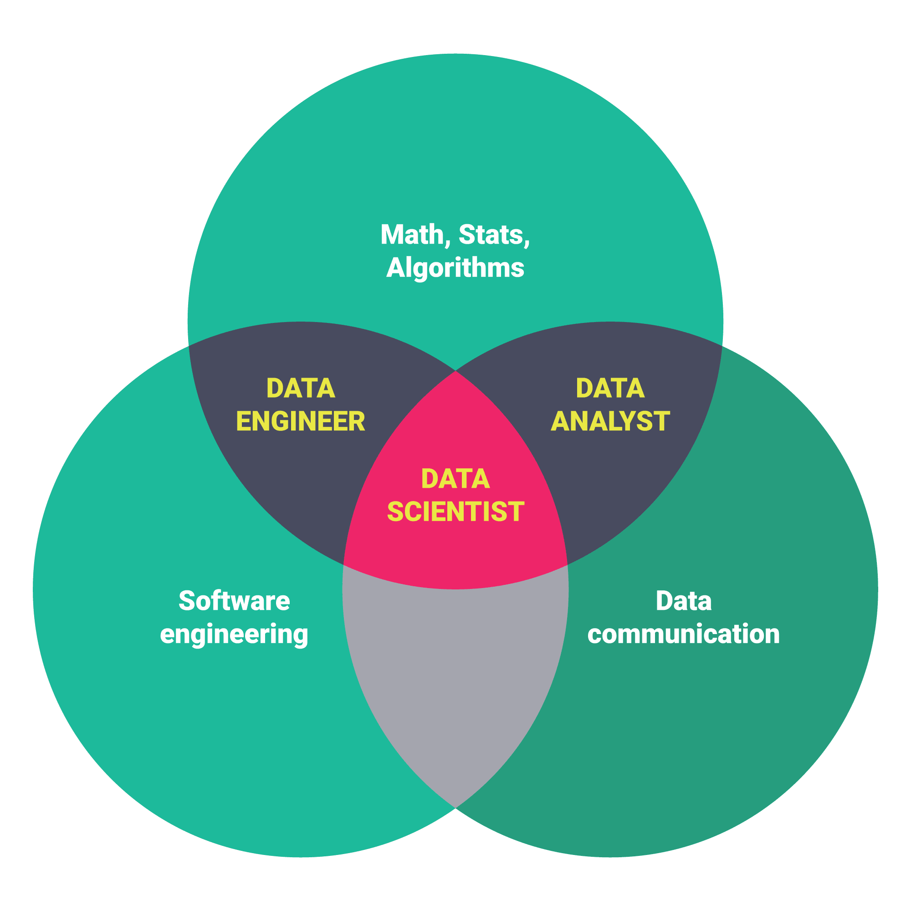
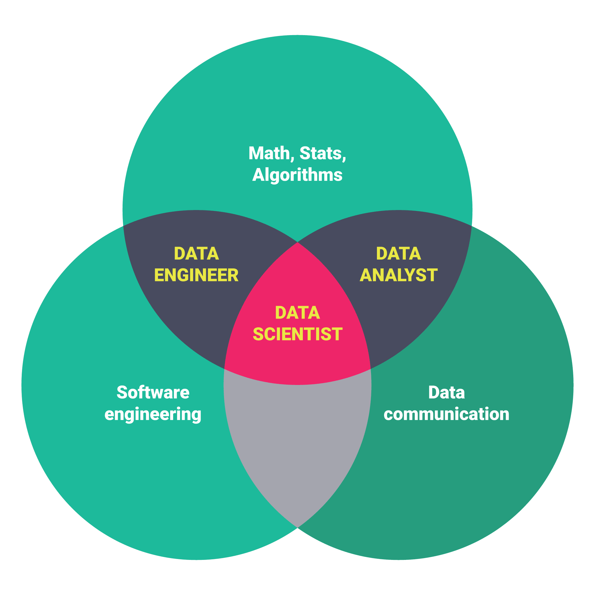

mandatory internship (3 credits)
This is important part of curriculum--it builds link between curriculum and application: helps graduates to find a job and then possibly hire more graduates and also helps us to see what are the industry needs and trends.In special circumstances if internship is not possible this can be replaced with addition 3 hours of the following (practicum/real world project for practitioners OR capstone/thesis/independent study for researchers)
also see https://libguides.rutgers.edu/datamanagement
practicum/real world project for practitioners OR capstone/thesis/independent study for researchers (3 credits)
what makes us different
We are trully interdisciplinary and we will fit your profile. Program faculty come from the following fields: math/statistics, computer science, social science, and humanities.Our program is not just data science itself but we combine it with substantive fields and prepare people to work specifically in these fields so our distinguishing feature and comparative advantage is small core and plenty of tracks/specializations that involve classes form our dept.
We focus on flexibility: everyone is at least a little different and we want to accommodate that--only five core classes and electives as opposed to other programs where majority is core. Also value hands on experience: internship/practicum. We focus on Python, and supplement it with R.
For the sake of added flexibility, we supplement/complement the curriculum with workshops/labs.
We also offer a 12 hour certificate.
We focus on skills and application, we want you to be able to do things. We won’t waste time on unnecessary stuff. To that end our core classes are completely new and designed specifically for this degree (not redesigned existing classes or worse yet a collection of existing classes made for other purposes).
There is an argument to be made that "data science" is mostly about cleaning, shaping data, and moving it from place to place. And we acknowledge it and provide a thorough and dedicated class to teach you the right skills.
do i need math?
Mathematics is the universal language of science. It is the foundation of many breakthroughs in science, engineering, and finance. Mathematics enables us to analyze and model physical and social phenomena quantitatively and logically and provides us the tools to solve them. Many jobs in today’s economy require analytic and quantitative skills. The math and statistics courses in this program equips the students with techniques and machineries to succeed in their professional careers.Hence, yes, you need some math, and ideally the more the better--math makes your transcript and CV look good--shows you can think logically with numbers--yet much math is not necessary, if you don't think better with math or have a "math block" you'll only have to take most basic math. Yet, also for many math does help and initial math block is often illusory--a person is afraid until she tries it and it works.
To summarize, only basic math is required, but there's plenty of math offered as electives. We recommend taking as much math as possible/useful/practicable.

 

actual program description ends here
pondering ideas, thinking, logic
General points/philosophy
Philosophy is to have as much variety from across FASC in core as possible so it's truly interdisciplinary and students get different perspectives and also get to know different dept and better able to choose electives.Note that Python over R is a choice (just for core, not electives), but i have a ton of recent evidence that Python is better, just one here, scroll to table mid page https://mbs.rutgers.edu/program/analytics-discovery-informatics-data-sciences
STEM v CSS
However, looks like there are 2 camps: STEM v soc sci/humanities, and so maybe lets have 2 tracks. This is what i think Ray was also kind of suggesting. And this is what others do, eg NB has 3 tracks: https://mbs.rutgers.edu/program/analytics-discovery-informatics-data-sciences but we allow more flexibility with courses. This would allow flexibility and having everyone on board and this could actually be our comparative advantage over competition that we have truly interdisciplinary program. Also, it is easy: most classes already exist, just have to develop 3-4 new classes for the core: I have one almost already ready (data management/Pandas and visualization/Matplotlib) and other ones i can easily develop possibly ideally as co-taught classes, there was enthusiasm on co-teaching: Haydee, I-Ming).Initial thinking: everybody needs to take intro and data management/Pandas and visualization/Matplotlib; but the other 2 core classes: possibly 2 tracks: for STEM: CS/math classes that i am narrowing down (see below); and for soc sci/humanities: some lighter more applied equivalents: i am actually happy to develop these from scratch (maybe co-teach with dan, paul, i-ming, jim?)
Initially was thinking about 2 tracks STEM and CSS for core, but after thinking and conversations (esp with Sunil) decided to go just with one core, and then people can satisfy STEM v CSS and domain area through electives
Then increased number of core classes to 5 as was thinking about useful stuff, and then cut back to 3: this allows more flexibility and just most important stuff
possible books to be incorporated in core
- maybe:
- https://columbia-applied-data-science.github.io/appdatasci.pdf
- http://math.ecnu.edu.cn/~lfzhou/seminar/[Joel_Grus]_Data_Science_from_Scratch_First_Princ.pdf
- data source handbook, a guide to public data
- Doing Data Science Straight Talk from the Frontline
- https://jakevdp.github.io/PythonDataScienceHandbook/
- https://www.cin.ufpe.br/~embat/Python%20for%20Data%20Analysis.pdf